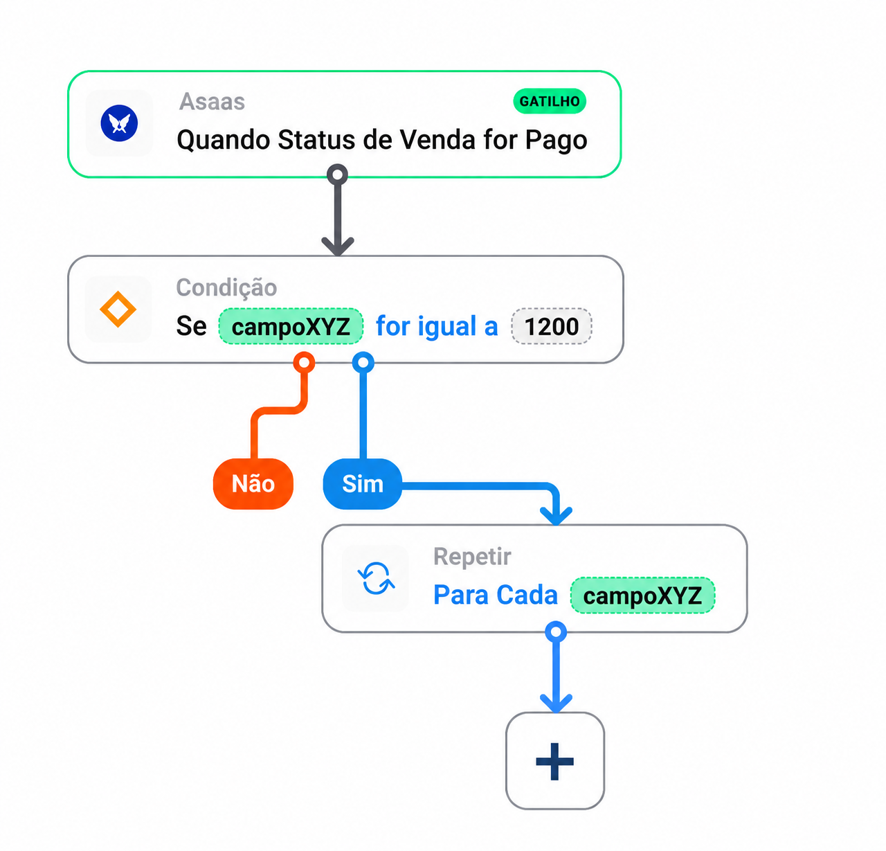

02 / Sinapse Finance
Sinapse Finance
Filling out a form independently and seeing what a financial automation does.
Context and my role
As lead designer at Sinapse, an outsourced financial operations provider, I worked on two initiatives with another designer, the product owner, specialists, and developers.
Where clients got stuck
Clients avoided the forms and asked consultants to fill them out. Over roughly two weeks, I investigated how clients used the forms, redesigned the flow, and tracked the first measurement after launch.
Recordings and feedback pointed to three questions. What should I enter? How large can the file be? How do I fix an error? I rewrote the labels and added guidance alongside the fields.
In a shorter follow-up measurement period, successful submissions rose from 58% to about 65%. The Google Analytics bounce rate fell from around 75% to under 40%, and the average time decreased.
The broader opportunity was to reduce typing. We considered collecting information through conversation and extracting it from documents. Neither approach was implemented during my time on the project.
Choosing how much flexibility to offer
The financial integrations already existed but had no visual interface. I mapped the rules with specialists and developers and explored a drag-and-drop diagram. Its flexibility increased the number of combinations and technical exceptions to handle.


I chose a linear flow with a card for each step and split setup into smaller tasks. The design let people monitor or disable an automation and check its error log, making workflows previously dependent on the Sinapse team visible.
During testing, I added descriptive titles to clarify what each step did.


Access to clients was limited. Participants familiar with productivity software understood the sequence but struggled with financial concepts. The tests evaluated the interaction. We still needed to validate it with the intended users.
Results and lessons learned
The form shipped and we measured its use. The automations received internal approval and development began. My involvement ended before full delivery or measurement of adoption.
Today I’d negotiate access to users earlier and spell out what each round of testing could tell us.